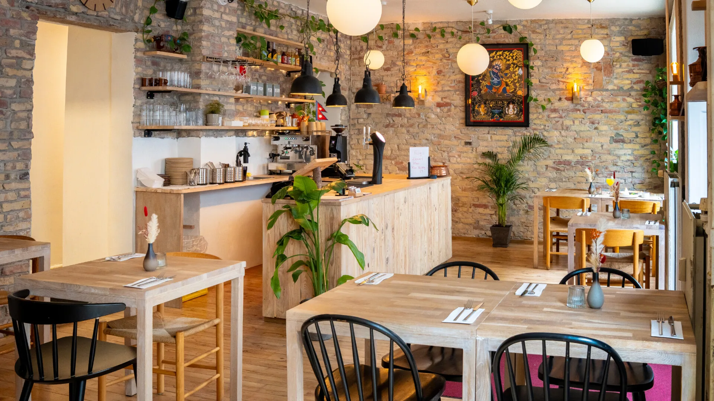
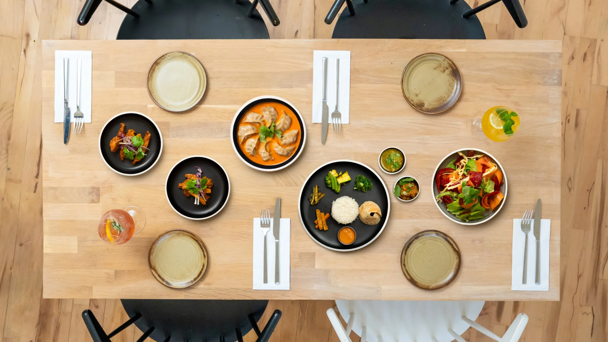
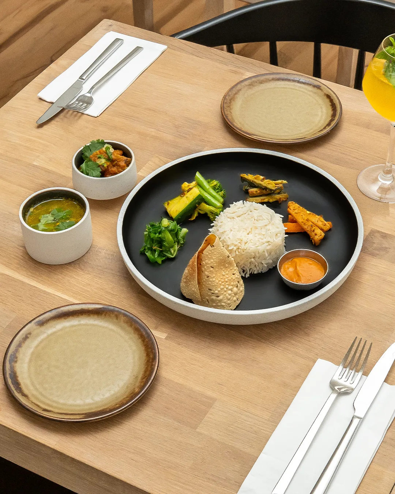
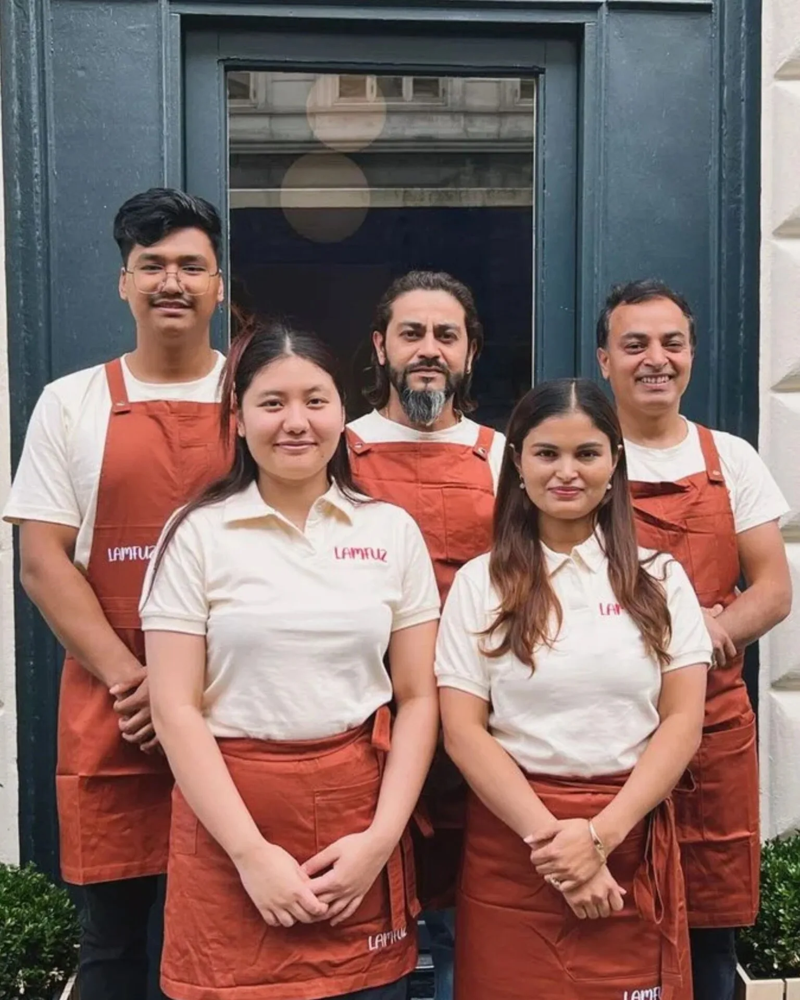

- Copy.webp)

OM LAMFUZ

Hos Lamfuz handler det om mere end mad – det handler om oplevelsen.
Vi bringer de autentiske nepalesiske smage til Danmark med kærlighed, krydderier og en dyb respekt for vores madkultur.
Vores retter er inspireret af barndommens måltider i rismarkerne i Nepal, hvor dufte af hvidløg, ingefær og chili fyldte luften.
Vores køkken handler ikke kun om opskrifter – det handler om håndværk, tradition og den gastfrihed, der kendetegner Nepal. Hver ret bliver skabt med præcision og respekt for de råvarer, vi arbejder med. Fra de dybe, aromatiske krydderier til de friske grøntsager og langsomt tilberedte saucer gør vi os umage for at bringe dig den samme varme og autenticitet, som vi selv voksede op med.
Her i København deler vi den tradition med dig – serveret med moderne finesse, lokale råvarer og ægte varme.
Lamfuz vil gerne introducere dig til det festfyrværkeri af smag, som vores barndoms nepalesiske køkken tilbyder. Vi tilbyder dine in og takeout, hvor vi inviterer dig ind i vores univers fuld af velsmagende og sund afslapning!
Spidskommen, gurkemeje, chili, koriander, hvidløg og ingefær vækker maden til live og giver dine smagsløg en rutsjebanetur – og så er det sundt! Lamfuz er til dig, der længes efter eksotisk mad og nye smage med vegetariske og veganske valgmuligheder. Og bare rolig, hvis du er dedikeret kødæder – vi har også menuer med lam, kylling og årstidens fisk.

OPLEV DEN AUTENTISKE SMAG
AF NEPAL I LAMFUZ
Lamfuz betyder slendrian, men med et interior bygget af kokken selv i genbrugsmaterialer og med alle detaljer kælet for, fornemmer man tydeligt den kærlighed, Krishna lægger i sin restaurant. Fra det kompromisløse valg af specialvarer til de hjemmelavede og til perfektion ristede krydderiblandinger, er man ikke i tvivl om, at Krishnas ambition er at placere Nepal solidt på den københavnske spisescene som et unikum af en oplevelse.
På hylden står den nepalesiske te – kendt for sin særlige blødhed og umamismag – side om side med danskproducerede sodavand, og i vitualrummet finder man kun de bedste koldpressede rapsolier. Retterne designes med udgangspunkt i danske råvarer i sæson og formes med Krishnas fornemmelse for Nepal, fuld af historier. På tallerkenerne i Lamfuz introduceres man til en moderne fortælling om den nepalesiske smagspalet i varme og muntre omgivelser.
RESERVER ET BORDVORES TEAM
Bag Lamfuz står Krishna Adhikari og Badal Maharjan.
Vi tilbragte begge hver vores barndom med at fjolle rundt i nepalesiske rismarker – og indimellem smage maden, urterne og krydderierne, der er særlige for vores hjemland. Det fulgte med os, og vi har ikke glemt det siden.
Spol frem til Danmark: Gennem ni års arbejde på danske caféer og restauranter, hvor vi oparbejdede vores færdigheder i et køkken, fandt vi en fælles passion for nepalesisk mad og dets vilde smage. Vi begyndte at hænge ud sammen, drikke øl og have lange natlige samtaler – og en beruset nat tænkte vi: Lad os lave noget sammen!
Det blev til det, der nu er Lamfuz. Suppleret med en kandidatgrad i ledelse, forretning og iværksætteri kan vi nu føre vores nepalesiske barndoms madkultur helt ud til danske køkkener og middagsborde.
